01
01
space chronicles / sending a letter home
02
ON SENDING A LETTER HOME
What survives the journey from one world to another? A letter carries information, but also an address, a memory and an imagined reader. These references approach communication as a relationship sustained across distance.
Qiaopi joins family correspondence with remittances. Handwriting and material support keep a bond between people who live apart. It provides a human starting point for the project: what would future travellers want to tell those who remain on Earth?
The Voyager Golden Record expands that question to the scale of a planet. Selected sounds and images describe a curated Earth, while instructions on its cover address an unknown reader. Selection and explanation become part of the message.
NASA’s HERA ground simulation examines coordination when replies arrive late. Katie Paterson’s Earth–Moon–Earth gives transmission a perceptible form: gaps in a returning signal become pauses in a piano performance. Waiting and loss shape the act of receiving.
Together, the cases frame Space Chronicles as a traveller’s reply: a message that carries traces of another place while maintaining a connection with home.
Routes connect research ideas, not signal trajectories.
The future reply is a project narrative proposal.
RESEARCH ATLAS
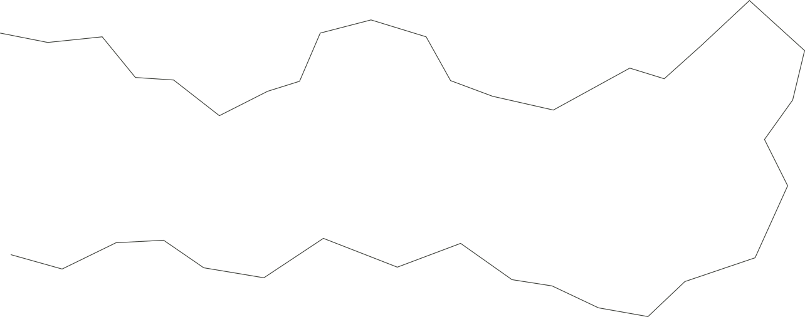
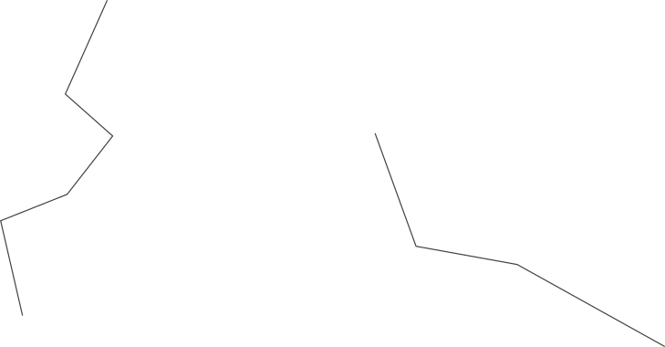
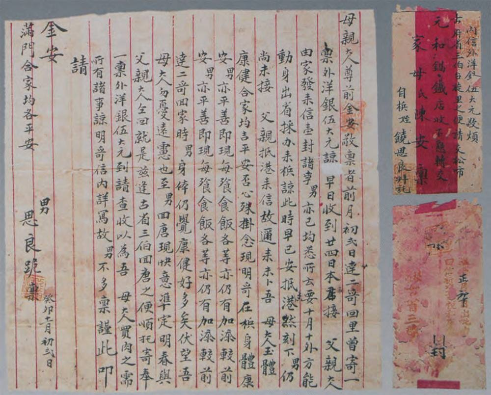
01
02
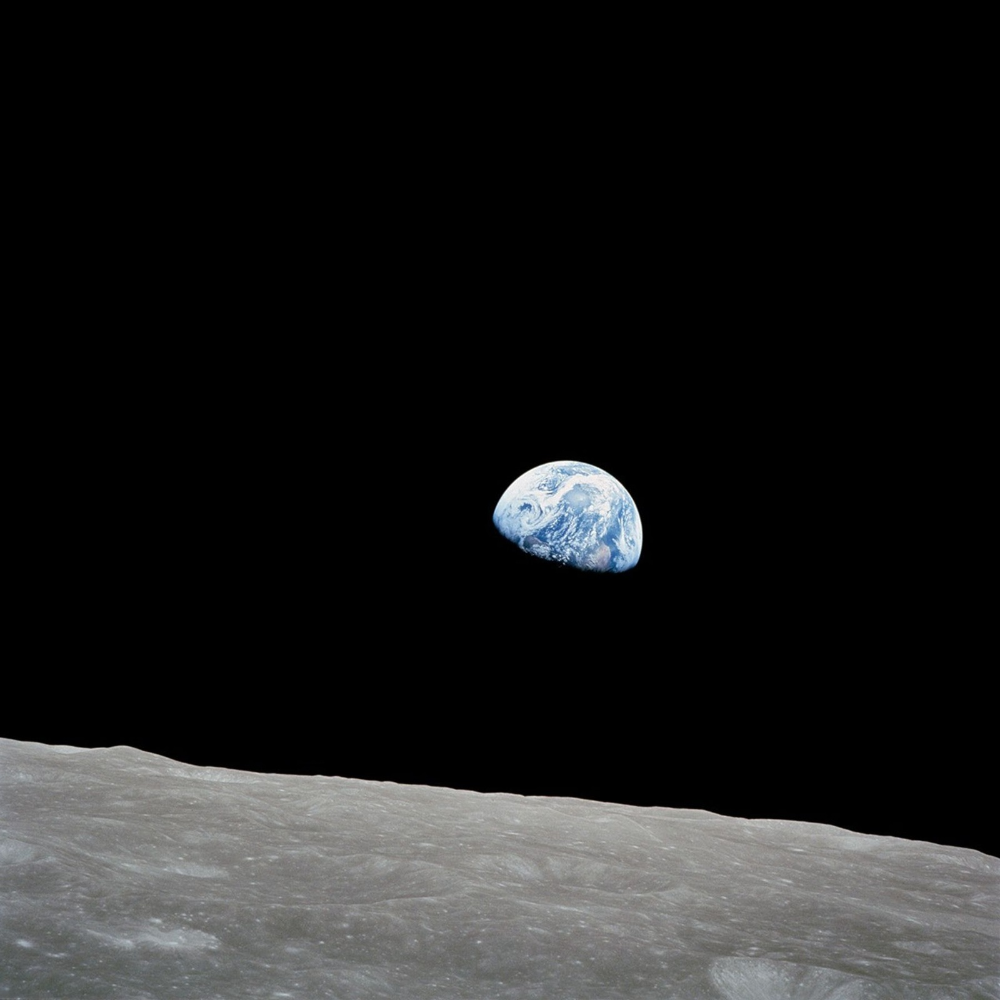
03
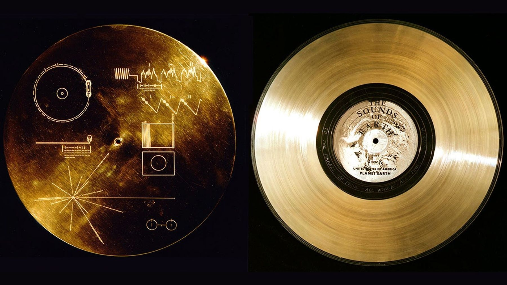
04
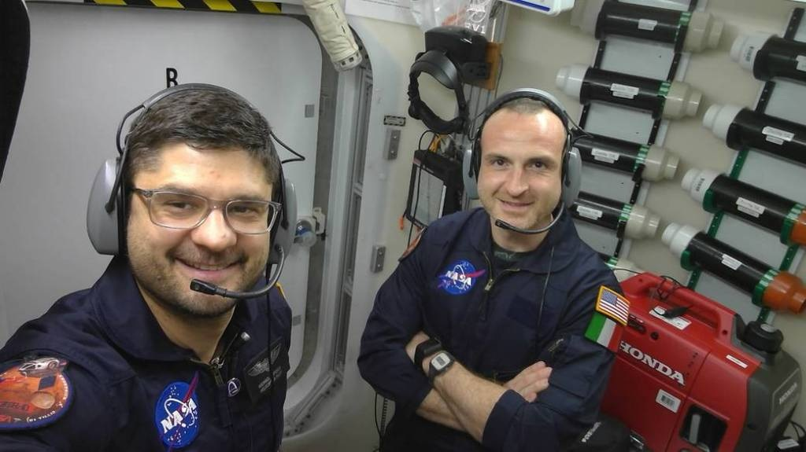
05
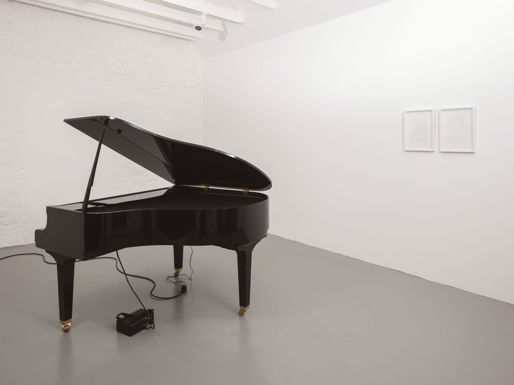
06
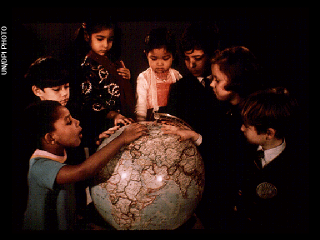
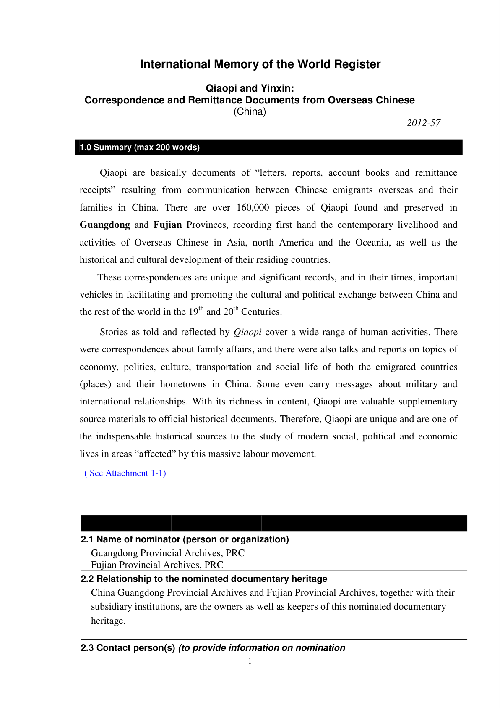
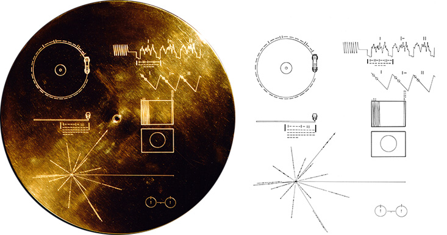
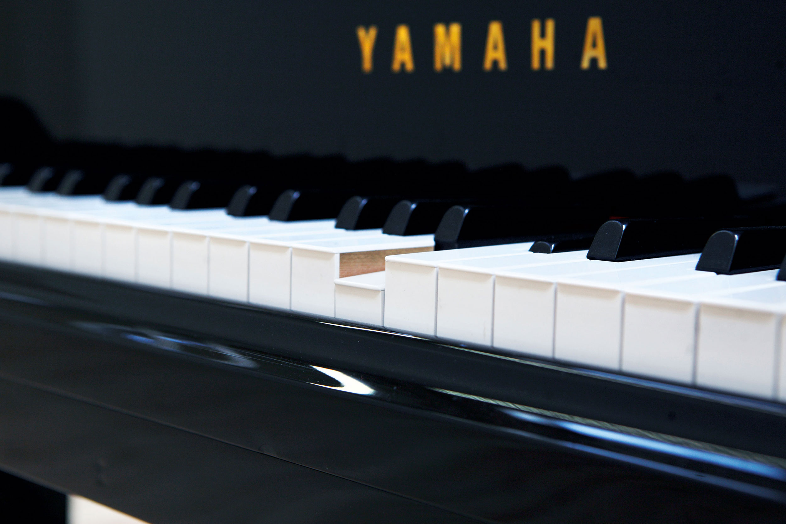
06
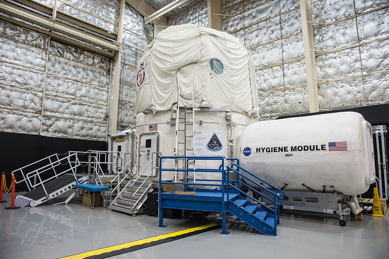
05
SEND
WAIT
A selected world.
An unknown reader.
45 DAYS
UP TO 5 MIN / ONE WAY
Ground simulation / 2022
A pause can carry
the trace of a journey.
01–02 KEEPING A CONNECTION
Qiaopi combined letters and remittances. An address, handwriting and material support maintained ties with family. Archive: MOWCAP / UNESCO.
03–04 CHOOSING WHAT TO SHARE
Earthrise offers a view of home. The Voyager Golden Record (1977) selects sounds and images for an unknown reader. Its cover provides decoding instructions. NASA / JPL.
05 LIVING WITH DELAY
NASA HERA, 2022: a 45-day ground simulation with up to five minutes of one-way delay. This is a communication analogue, not an actual interplanetary mission.
06 HEARING THE JOURNEY
Katie Paterson, Earth–Moon–Earth (2007). Gaps in the lunar return signal become silences in a piano performance. Image: artist documentation.
SOURCE IMAGES / MOWCAP · NASA / JPL · KATIE PATERSON
A LETTER AS A RELATIONSHIP
Memory gives a message its purpose; selection gives it form; distance changes its rhythm. Communication includes both the content and the conditions of receiving it.
PROJECT INFERENCE
A future traveller’s reply carries a local world back to Earth. This is a speculative narrative, not a documented reply to the Voyager Golden Record.
DISTANCE / MEMORY / TRANSMISSION
A different place.
A continuing bond.
04 / RECORD CONTENT · UN/DPI
02 / UNESCO NOMINATION
04 / COVER & DECODING
06 / PLAYER-PIANO DETAIL
05 / HERA HABITAT · NASA